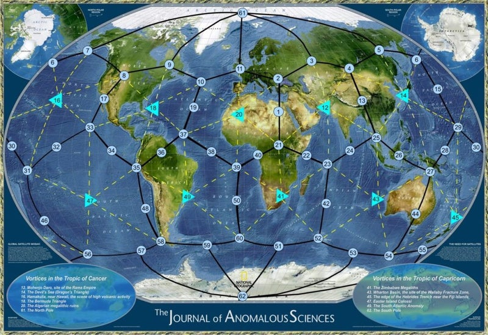
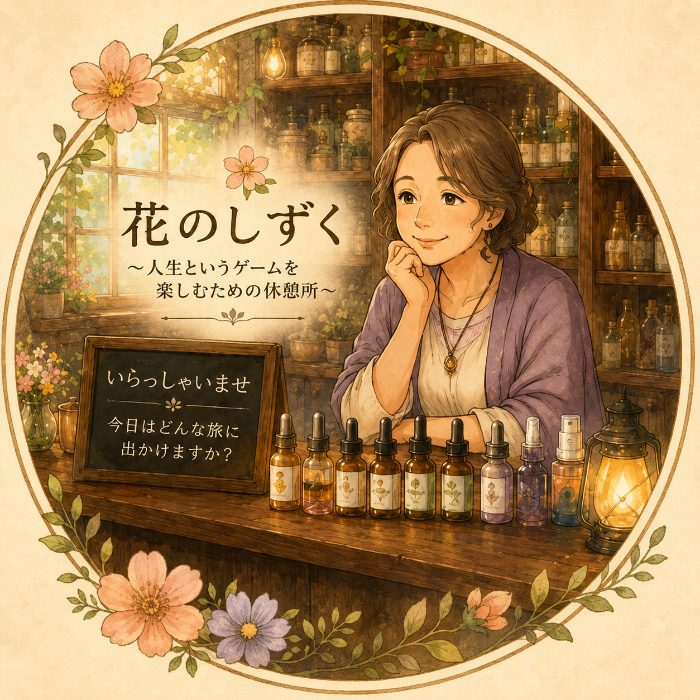

魂は生まれる前に、やりたいこと・クリアしたい課題を決めて、ぴったりのキャラクターを選んでこの世界に降りてきた——。マヤ暦は、その設計図（ブループリント）。あなたのKIN・紋章・音に、キャラクターの取扱説明書が書かれています。マヤンエッセンスは、そのキャラクターを最大限に生かすための、周波数のしずくです。
すべての記録が保存されている、宇宙のクラウド。エメラルドタブレット、虚空蔵菩薩——古今東西、いろいろな名前で呼ばれてきました。

ピラミッド、ストーンヘンジ、マチュピチュ。世界の巨石遺跡3,000箇所以上が、地球を覆うワールドグリッドの上に並んでいると言われます。
何に幸せを感じ、何に怒るのか。感情はキャラクターのもの。自分がどんなキャラクターなのか、知っていますか？ その答えがマヤ暦の紋章です。
ゲームがうまくなるコツは4つ。ゴールを決める、ルールを知る、キャラクターを知る、そして時間をかける。このサイトは、3つめの「キャラクターを知る」お手伝いをします。
古代マヤの人々が使っていた260日周期の神聖な暦「ツォルキン」がもとになっています。260日は、20の紋章と13の音の組みあわせ。生まれた日を調べると、その人が選んできたキャラクター——役割や才能——が見えてきます。
マヤの人々は「時間はエネルギーである」と考え、農耕のための365日の暦と、儀式のための260日の暦を同時に使いこなしていました。260日は、人が母のお腹に宿ってから生まれるまでの日数とも重なります。
いまのメキシコ南部からグアテマラのあたりで、数千年にわたって栄えた文明。文字と天文学、そして精緻な暦を持ち、ピラミッドの都市をいくつも築きました。その暦は、いまも世界中の人々を惹きつけています。
マヤンエッセンスは、マヤ暦の紋章の特徴を皆がよく生きることができるようにサポートするためのフラワーエッセンスブレンドです。
紋章ごとに、キャラクターをサポートする2〜3種類の国産フラワーエッセンスをブレンドし、TimeWaverでマヤのエネルギーを書き込んでいます。つくり手は、国産の花のみを使う日本のフラワーエッセンスメーカー〈花のしずく〉。あなたの周波数をサポートするアイテムです。
人生がうまくいかないと感じるとき、それは魂の周波数とキャラクターの波動がズレているサインかもしれません。
「合ってないな」と感じたら、無理に頑張る前に、まず自分のチャンネルを合わせてみる。マヤ暦という設計図を開き、マヤンエッセンスという周波数のしずくを使って、本来の自分に戻っていきましょう。
気になる紋章をひらくと、キャラクターの物語と、ブレンドされている花、エッセンスのご案内があります。
生年月日を入れるだけ。あなたのKINナンバーと、太陽の紋章（表の顔）・ウェイブスペル（魂の望み）・音の3つをもとにした、ミニ鑑定が読めます。
{{ rKw }}
{{ rText }}
{{ wKw }}
{{ wText }}
{{ toneText }}
{{ readingSelf }}
{{ readingAdvice }}
A. {{ q.a }}
鑑定やセッションのその先に。紋章のエッセンスは、お伝えした内容をクライアントさまが日々受け取りつづけるためのツールになります。お取り扱い（代理店）のご案内もあります。

研究が大好きな店主。面白いものを見つけては試して、良かったものをそっと棚に並べています。今日も何か新しい発見があるかもしれません。
マヤ暦は、知るだけでも心がすっと軽くなり、人生に変化が起こる素晴らしいツールです。
そのマヤ暦の力をさらに引き出すアイテムとして生まれたのが「マヤンエッセンス」です。
私は講座の冒頭でいつも、こうお話ししています。
「人生というゲームで自分が選んだキャラクターを知り、そのキャラクターらしく生きるほど、ゲームは進めやすくなる」と。
そして、その後押しをしてくれるのがフラワーエッセンス。実際のセッションでも、マヤ暦とフラワーエッセンスはいつも併用してきました。
ある日の目覚める直前、TimeWaverでマヤ暦のキャラクターの特性をエッセンスに書き込んでいる夢を見ました。（私の場合、目覚める直前に受け取るメッセージは、とても大事なことが多いのです。）
こうして生まれたのがマヤンエッセンスです。
セッションを受けなくても、誕生日からご自分のマヤ暦を調べるだけで、人生を後押しするアイテムを手にしていただけます。
マヤンエッセンスは、それぞれのKIN（キン）の方が、マヤ暦の紋章で表されるキャラクターを活かし、より自分らしく生きるためのツールとしてお作りしています。
なお、マヤ暦を伝えている団体はたくさんあります。講座や動画で私がお話しする内容が、他の団体で学ばれたことと違う場合もあるかもしれません。その際は、解釈の違いとしてご理解いただけると嬉しいです。
マヤンエッセンスが、あなたのサポートになりますように。
花のしずく
齋藤佐世子